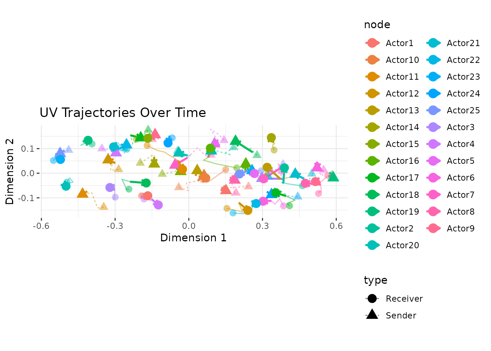
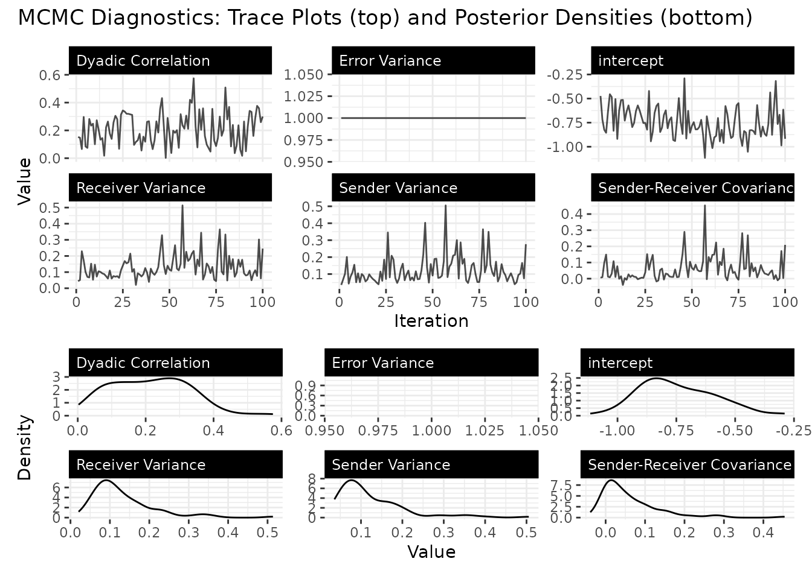
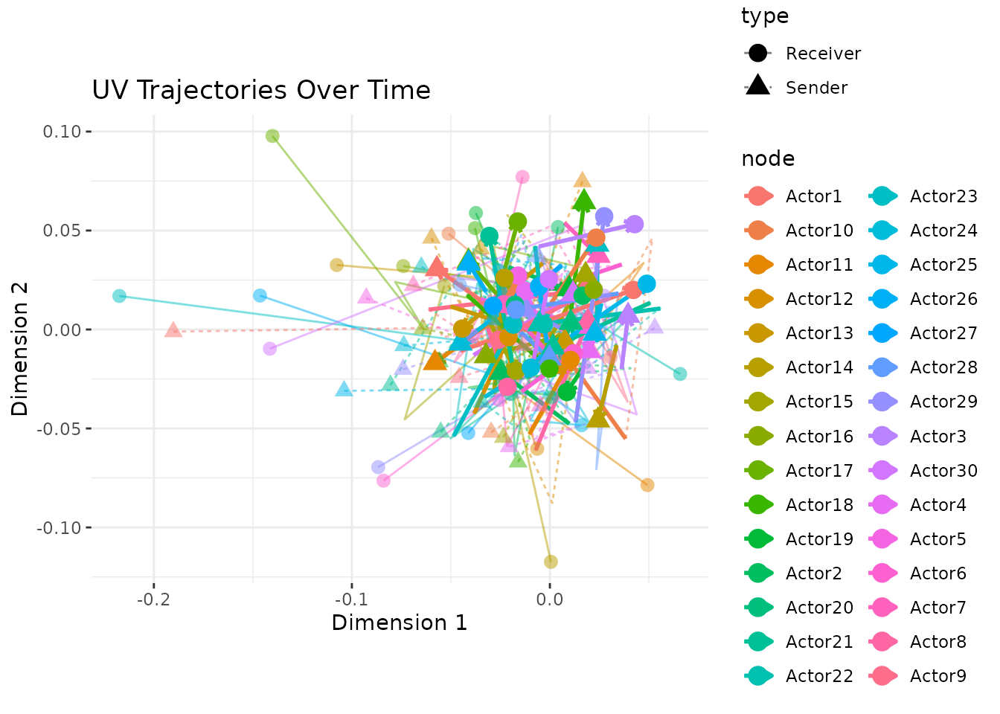
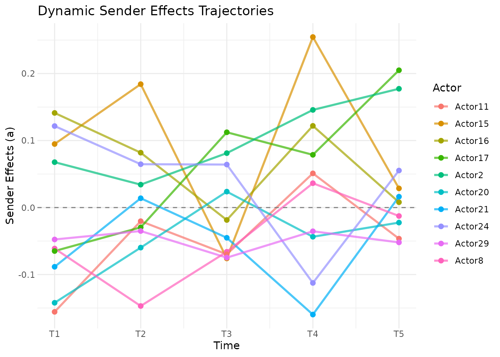

Dynamic Effects in Longitudinal AME Models
Cassy Dorff, Tosin Salau, Shahryar Minhas
2026-03-29
Source:vignettes/dynamic_effects.Rmd
dynamic_effects.RmdIntroduction
Networks change. Countries that were close allies a decade ago may have drifted apart. A legislator’s co-sponsorship patterns shift as they gain seniority or switch committee assignments. A user’s purchasing habits evolve as their tastes change.
The standard AME model assumes that each actor has a fixed latent
position and fixed additive effects across all time periods. This is a
reasonable starting point (pooling across time gives you more data and
more precise estimates), but it can miss important dynamics. The
lame package provides two mechanisms for letting the model
capture temporal change: dynamic_uv for time-varying latent
positions and dynamic_ab for time-varying additive
effects.
This vignette explains what these options do, when to use them, and how to interpret the results.
What Are Dynamic Effects?
The Static Baseline
In the standard AME model for longitudinal data, the tie between actors and at time is:
The covariates () can vary over time, but everything else (the sender effect , the receiver effect , and the latent positions and ) is constant. This means the model assumes that a country’s tendency to sanction others, or its position in the latent “sanctioning space,” is the same in 1993 as in 2000.
Dynamic Latent Positions (dynamic_uv = TRUE)
When you set dynamic_uv = TRUE, each actor’s latent
position evolves over time according to an AR(1) process:
The autoregressive parameter controls how persistent the positions are. A value close to 1 means positions change slowly, as last year’s position is a strong predictor of this year’s. A value close to 0 means positions are essentially re-drawn each period. In practice, is estimated from the data, so you don’t need to choose it yourself.
This is useful when you believe the underlying community structure is evolving: alliances shift, social groups re-form, trading blocs realign.
Dynamic Additive Effects (dynamic_ab = TRUE)
When you set dynamic_ab = TRUE, the sender and receiver
effects evolve over time:
This captures changes in actors’ overall activity levels. A country
might become a more active sanctioner after a change in government. A
student might become more or less socially active across semesters.
These are changes in how much an actor participates, not in who they
connect with (that’s what dynamic_uv captures).
You can use either option alone or combine them. In practice,
dynamic_ab is often a good place to start, since changes in
overall activity are common and relatively easy to estimate.
dynamic_uv adds more flexibility but also more
parameters.
Genuine Dynamics: What They Look Like
We start with an example where dynamics are truly present, so you can see what the model recovers when there is a real signal. We simulate 25 actors over 5 periods where each actor’s latent position evolves via an AR(1) process with . We use stronger latent positions (SD = 1.5) and a negative intercept to produce a network with realistic density (roughly 30%).
library(lame)
set.seed(6886)
n_dyn <- 25
n_per <- 5
R_dyn <- 2
# evolving latent positions with AR(1) dynamics
U <- matrix(rnorm(n_dyn * R_dyn, 0, 1.5), n_dyn, R_dyn)
V <- matrix(rnorm(n_dyn * R_dyn, 0, 1.5), n_dyn, R_dyn)
Y_dyn <- list()
for(t in 1:n_per) {
if(t > 1) {
U <- 0.85 * U + matrix(rnorm(n_dyn * R_dyn, 0, 0.3), n_dyn, R_dyn)
V <- 0.85 * V + matrix(rnorm(n_dyn * R_dyn, 0, 0.3), n_dyn, R_dyn)
}
eta <- -1 + U %*% t(V)
Y_t <- matrix(rbinom(n_dyn * n_dyn, 1, pnorm(eta)), n_dyn, n_dyn)
diag(Y_t) <- NA
rownames(Y_t) <- colnames(Y_t) <- paste0("A", 1:n_dyn)
Y_dyn[[t]] <- Y_t
}
# note: iterations are reduced for vignette speed.
# use burn >= 1000 and nscan >= 5000 for real analyses.
fit_dyn_real <- lame(Y_dyn, R = 2,
dynamic_uv = TRUE, dynamic_ab = TRUE,
family = "binary",
burn = 100, nscan = 2500, odens = 25,
verbose = FALSE, plot = FALSE)
summary(fit_dyn_real)
#>
#> === Longitudinal AME Model Summary ===
#>
#> Call:
#> NULL
#>
#> Time periods: 5
#> Family: binary
#> Mode: unipartite
#> Dynamic latent positions: enabled (rho_uv = 0.946 )
#> Dynamic additive effects: enabled (rho_ab = 0.403 )
#>
#> Regression coefficients:
#> ------------------------
#> Estimate StdError z_value p_value CI_lower CI_upper
#> intercept -0.746 0.162 -4.599 0 -1.004 -0.428 ***
#> ---
#> Signif. codes: 0 '***' 0.001 '**' 0.01 '*' 0.05 '.' 0.1 ' ' 1
#> Note: p-values are approximate (posterior mean / SD); use credible intervals for inference.
#>
#> Variance components:
#> -------------------
#> Estimate StdError
#> va 0.125 0.085
#> cab 0.061 0.078
#> vb 0.132 0.081
#> rho 0.213 0.116
#> ve 1.000 0.000
#> (va = sender, cab = sender-receiver covariance, vb = receiver,
#> rho = dyadic correlation, ve = residual variance)The trajectory plot shows how actors move through the latent space over time. With genuine temporal structure, the paths should show coherent movement rather than random jumping:
uv_plot(fit_dyn_real, plot_type = "trajectory")
Always check convergence. Dynamic models have more parameters than static models, so adequate mixing is harder to achieve and requires longer chains:
trace_plot(fit_dyn_real)
What Happens Without Temporal Structure?
To understand how the dynamic model behaves when there is no signal,
we fit the same model to independent networks (no temporal correlation).
This is a useful null baseline: the estimated rho values
tell you what the prior alone produces when the data are
uninformative.
set.seed(6886)
n <- 30
n_periods <- 5
# independent binary networks with no temporal structure
Y_list <- list()
for(t in 1:n_periods) {
Y_t <- matrix(rbinom(n*n, 1, 0.2), n, n)
diag(Y_t) <- NA
rownames(Y_t) <- colnames(Y_t) <- paste0("Actor", 1:n)
Y_list[[t]] <- Y_t
}
# fit with a custom prior on rho_uv to illustrate prior sensitivity
prior_custom <- list(
rho_uv_mean = 0.95, # expect very slow change in latent positions
rho_uv_sd = 0.05 # tight prior
)
fit_null <- lame(
Y = Y_list,
R = 2,
dynamic_uv = TRUE,
dynamic_ab = TRUE,
family = "binary",
prior = prior_custom,
burn = 100,
nscan = 2500,
odens = 25,
verbose = FALSE,
plot = FALSE
)
summary(fit_null)
#>
#> === Longitudinal AME Model Summary ===
#>
#> Call:
#> NULL
#>
#> Time periods: 5
#> Family: binary
#> Mode: unipartite
#> Dynamic latent positions: enabled (rho_uv = 0.107 )
#> Dynamic additive effects: enabled (rho_ab = 0.478 )
#>
#> Regression coefficients:
#> ------------------------
#> Estimate StdError z_value p_value CI_lower CI_upper
#> intercept -0.863 0.146 -5.92 0 -1.174 -0.608 ***
#> ---
#> Signif. codes: 0 '***' 0.001 '**' 0.01 '*' 0.05 '.' 0.1 ' ' 1
#> Note: p-values are approximate (posterior mean / SD); use credible intervals for inference.
#>
#> Variance components:
#> -------------------
#> Estimate StdError
#> va 0.076 0.043
#> cab 0.024 0.039
#> vb 0.073 0.044
#> rho 0.196 0.077
#> ve 1.000 0.000
#> (va = sender, cab = sender-receiver covariance, vb = receiver,
#> rho = dyadic correlation, ve = residual variance)We can compare the estimated persistence parameters across the two settings:
cat("Independent data rho_uv:", round(mean(fit_null$rho_uv), 3), "\n")
#> Independent data rho_uv: 0.107
cat("Correlated data rho_uv:", round(mean(fit_dyn_real$rho_uv), 3), "\n")
#> Correlated data rho_uv: 0.946With only 5 time periods, the rho_uv estimates may be
similar in both cases. This is expected: the AR(1) parameter is
identified from the correlation of latent positions across adjacent time
periods, and 5 time points provide very little information to update the
prior. In real applications with 10 or more time periods, the difference
between genuine dynamics and independent data becomes much clearer. The
key diagnostic here is the trajectory plot (compare the coherent paths
above with the erratic paths below) rather than the point estimate of
rho.
Visualizing the Null Case
The trajectory plot for independent data looks different: paths are more erratic, without the smooth coherence of genuinely correlated positions.
uv_plot(fit_null, plot_type = "trajectory")
The additive effects show similar behavior. Without genuine temporal structure, the trajectories reflect noise rather than real shifts in actor activity.
ab_plot(fit_null, effect = "sender", plot_type = "trajectory")
#> ℹ Showing top 5 and bottom 5 actors by average effect
#> → Use `show_actors` to specify actors to display
Comparing Model Specifications
A natural workflow is to fit several specifications and compare their goodness-of-fit. We use the independent data from above to show that dynamic effects add nothing when there is no signal.
# static model (no dynamic effects)
fit_static <- lame(Y_list, R = 2, family = "binary",
burn = 100, nscan = 2500, odens = 25,
verbose = FALSE, plot = FALSE)
# dynamic latent positions only
fit_uv <- lame(Y_list, R = 2, dynamic_uv = TRUE, family = "binary",
burn = 100, nscan = 2500, odens = 25,
verbose = FALSE, plot = FALSE)
# dynamic additive effects only
fit_ab <- lame(Y_list, R = 2, dynamic_ab = TRUE, family = "binary",
burn = 100, nscan = 2500, odens = 25,
verbose = FALSE, plot = FALSE)
# full dynamic
fit_full <- lame(Y_list, R = 2, dynamic_uv = TRUE, dynamic_ab = TRUE,
family = "binary",
burn = 100, nscan = 2500, odens = 25,
verbose = FALSE, plot = FALSE)Compare the GOF statistics across models. For each specification, we compute posterior predictive p-values: how often do the simulated network statistics exceed the observed ones? Values near 0.5 indicate good fit.
# compute p-values for each model and each GOF statistic
compute_pvals <- function(fit) {
gof <- fit$GOF
sapply(names(gof), function(stat) {
mat <- gof[[stat]]
obs <- mat[, 1] # first column = observed
sims <- mat[, -1] # remaining = posterior predictive
mean(colMeans(sims) >= mean(obs))
})
}
gof_comparison <- rbind(
Static = compute_pvals(fit_static),
Dynamic_UV = compute_pvals(fit_uv),
Dynamic_AB = compute_pvals(fit_ab),
Full = compute_pvals(fit_full)
)
round(gof_comparison, 3)
#> sd.rowmean sd.colmean dyad.dep cycle.dep trans.dep
#> Static 0.90 0.97 0.50 0.57 0.34
#> Dynamic_UV 0.92 0.99 0.51 0.55 0.31
#> Dynamic_AB 0.98 1.00 0.94 0.31 0.34
#> Full 0.87 0.88 0.87 0.39 0.33Since the data were generated without temporal structure, the static model should fit as well as or better than the dynamic models. If you see similar p-values across specifications, that confirms the dynamic parameters are not needed here.
When to Use Dynamic Effects
Use dynamic_ab when you suspect actors’
overall activity levels change over time. This is common in many
settings: countries go through isolationist vs. interventionist phases,
users churn in and out of platforms, students become more or less
engaged across semesters.
Use dynamic_uv when you suspect the
underlying community structure is shifting. This is a stronger claim,
not just that actors are more or less active, but that the pattern of
who connects with whom is changing. Examples include political
realignment, market disruption, or generational turnover in a social
network.
Use both when you believe both types of change are happening. This is the most flexible specification but also the most data-hungry. With short panels (few time periods) or sparse networks, the dynamic parameters may not be well-identified, and you might be better off with the static model.
Stick with static when you have few time periods, when the network structure is genuinely stable, or when you primarily care about the covariate effects (which are the same across specifications) rather than the latent structure.
Dealing with Rotational Indeterminacy
One subtlety of dynamic latent space models: the latent space is only identified up to rotation at each time point. This means that even if actor positions are evolving smoothly, the raw estimated matrices might appear to “jump” between time periods due to arbitrary rotations.
The procrustes_align() function solves this by applying
Procrustes rotation to align each time period’s positions to the
previous one:
# align latent positions across time
aligned <- procrustes_align(fit_null)
str(aligned$U) # 3D array: actors x dimensions x time
#> num [1:30, 1:2, 1:5] -0.1902 -0.0241 0.053 -0.0206 -0.0927 ...
#> - attr(*, "dimnames")=List of 3
#> ..$ : chr [1:30] "Actor1" "Actor2" "Actor3" "Actor4" ...
#> ..$ : NULL
#> ..$ : NULLYou can also extract aligned positions as a tidy data frame using
latent_positions() with align = TRUE (the
default for lame objects):
lp <- latent_positions(fit_null, align = TRUE)
head(lp)
#> actor dimension time value posterior_sd type
#> 1 Actor1 1 1 -0.190176494 NA U
#> 2 Actor2 1 1 -0.024138992 NA U
#> 3 Actor3 1 1 0.052951908 NA U
#> 4 Actor4 1 1 -0.020587659 NA U
#> 5 Actor5 1 1 -0.092732549 NA U
#> 6 Actor6 1 1 -0.004833171 NA UThis data frame is ready for ggplot2 if you want to
build custom trajectory plots (e.g., highlighting specific actors or
overlaying external events).
Implementation Notes
The dynamic effects are implemented in C++ via Rcpp and RcppArmadillo. The AR(1) updates use Gibbs sampling with block updates across all actors at each time point, which is efficient for large networks.
References
Hoff, PD (2021). Additive and Multiplicative Effects Network Models. Statistical Science 36, 34–50.
Sewell, D. K., & Chen, Y. (2015). Latent space models for dynamic networks. Journal of the American Statistical Association, 110(512), 1646-1657.
Durante, D., & Dunson, D. B. (2014). Nonparametric Bayes dynamic modeling of relational data. Biometrika, 101(4), 883-898.